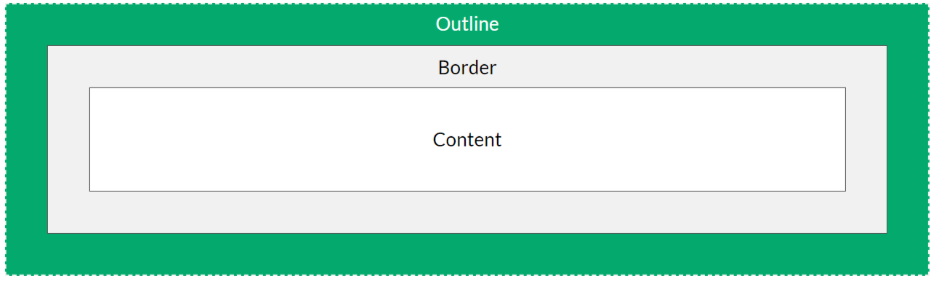
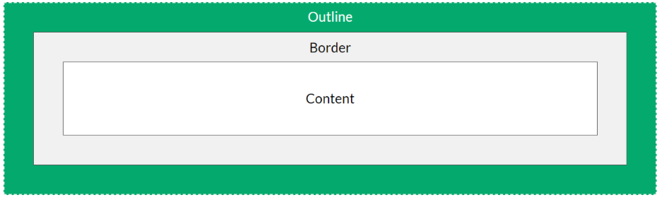

bron 1: Responsive Web Design with HTML5 and CSS - 4th edition - Ben Frain bron 2: W3Schools
Cascading Style Sheet
HTML alleen maakt een website niet visueel aantrekkelijk. CSS is verantwoordelijk voor dit deel. Met CSS-regels kun je ontwerpen hoe de afzonderlijke componenten die je eerder in HTML hebt gedefinieerd, moeten worden weergegeven. worden weergegeven. Je kan CSS dus gebruiken om het ontwerp en de lay-out van een webpagina te definiëren. Je kan bijvoorbeeld tekstkleuren, tekstgroottes, randen, achtergrondkleuren, kleurverlopen enzovoort definiëren, randen, achtergrondkleuren, kleurverlopen, enzovoort.
CSS definiëren op verschillende niveaus
- Aparte file
<head>
<link rel="stylesheet" href="mystyle.css">
</head>
- In html <style> element
<head>
<style>
/*Write your CSS code here*/
<style>
</head>
- Inline
<htmlElement style="property1:value1 ; property2:value2;">
...
</htmlElement>
Syntax

Selectors, Pseudo-classes en Pseudo-elements
elementName {...;}
.className {...;}
#idName {...;}
element:pseudo-classname {...;}
/*e.g.: a:hover{...;}*/
element::pseudo-elementname {...;}
/*e.g.: h1:before{...;}*/
Types of combinators:
- descendant selector (space) specifies all descendants
- child selector (>) only goes one deep
- adjacent sibling selector (+) selects an element that is directly after another specific element.
- general sibling selector (~) selects all elements that are next siblings of a specified element.
Margin, padding en outline
 

Sizing
- Absolute:
px,pt,pc,in,cm,mm - Relative:
%,ex,ch,fr,em,rem - Viewport (define in head):
vw,vh,vmin,vmax
<meta name="viewport" content="width=device-width, initial-scale=1.0">
Positioning
- Static: An element with
position: static;is not positioned in any special way; it is always positioned according to the normal flow of the page.
Static positioned elements are not affected by the top, bottom, left, and right properties. - Relative: An element with
position: relative;is positioned relative to its normal position.
Setting the top, right, bottom, and left properties of a relatively-positioned element will cause it to be adjusted away from its normal position. Other content will not be adjusted to fit into any gap left by the element. - Fixes: An element with
position: fixed;is positioned relative to the viewport, which means it always stays in the same place even if the page is scrolled. The top, right, bottom, and left properties are used to position the element.
A fixed element does not leave a gap in the page where it would normally have been located. - Absolute: An element with
position: absolute;is positioned relative to the nearest positioned ancestor (instead of positioned relative to the viewport, like fixed).
Absolute positioned elements are removed from the normal flow, and can overlap elements. - Sticky: An element with
position: sticky;is positioned based on the user’s scroll position.
A sticky element toggles betweenrelativeandfixed, depending on the scroll position. It is positioned relative until a given offset position is met in the viewport - then it “sticks” in place (like position:fixed).
Calculations
e.g.:
width: calc(100% - 100px);width: max(50%, 300px);width: min(50%, 300px);
CSS variables
:root {
--blue: #1e90ff;
--white: #ffffff;
}
body { background-color: var(--blue); }
Opdrachten
- Maak je footer fixed onderaan de pagina
- Voeg een afbeelding van jezelf (of) een stockfoto toe aan je over mij sectie en zorg ervoor dat de afbeelding steeds richts staat
- Maak een nav sectie die 2 anchor elementen heeft: 1 voor de home page en een voor de contact page.
- Gebruik volgende bron om je nav sectie te stijlen zodat je een verticale navigatie sectie hebt aan de linkerkant van je pagina die 100% van de hoogte in beslag neemt.
- Gebruik een input checkbox die je gefixed houd in de rechterboven hoek. Zorg ervoor dat je navigatie sectie verborgen wordt wanneer de checkbox niet is aangevinkt en getoond wordt wanneer je de checkbox aanduid.
- Gebruik volgende bron om je formulier in je contact pagina te stijlen..
- Gebruik volgende bron om de globale layout van je site te updaten.
- Zorg al voor een responsive design door al je font-sizes aan te passen aan een vaste font-size die zich aanpast aan de grootte van de pagina.
- Kies een leuke font voor je pagina en eventueel complementaire fonts voor speciale secties zoals quotes. (zorg ook voor fallback fonts)
- Gebruik icons in plaats van tekst in je navigation sectie.
- Geef je creativiteit de vrije loop om je site zo mooi mogelijk te maken.